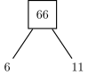
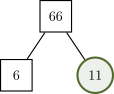
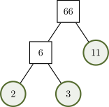
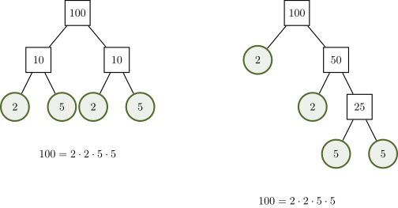
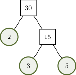
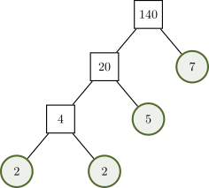

Rankings in a race: Identifying the top 3 winners in a race.
Counting Numbers Whole Numbers
There is no such thing as a 0th place in a
race. The winners are 1st, 2nd and 3rd.
Before we can simplify fractions, we first need to understand some concepts involving counting numbers (also called natural numbers) and whole numbers.
\(\begin {aligned} & \textrm {Counting Numbers:} \ \{1, 2, 3, \dots \} \\[1.5ex] & \textrm {Whole Numbers:} \ \{0, 1, 2, 3, \dots \} \end {aligned}\)
While these sets differ only by the number 0, having distinct names is useful when discussing concepts in which it may or may not make sense to include 0. Whole numbers are used when 0 is needed to represet a starting point or the complete absence of something, while counting numbers are used when a concept requires at least one of something to exist.
Rankings in a race: Identifying the top 3 winners in a race.
Points scored in a basketball game: Tracking the total score for a team.
Defining Polygons: Stating how many sides a specific geometric shape has.
Store Inventory: Keeping track of how many laptops are left in stock.
The factors of a whole number are numbers that divide into it evenly (no remainder). Below are the factors of 18.
Factors of 18: 1, 2, 3, 6, 9, 18
The factors of a number can be used to write the number as a product. Below, the number 18 has been written as a product using the factors 6 and 3.
Note that we can also write the number 18 as a product using the factors 2 and 9.
The first several prime numbers are 2, 3, 5, 7, 11, 13, 17, 19, 23 and 29. A counting number greater than 1 that’s not prime is called a composite number.
Select all that apply.
The prime factorization of a composite number is the number written as the product of prime numbers. For example, the prime factorization of \(18 = 2 \cdot 3 \cdot 3.\) We will use factorization trees to find the prime factorization of a composite number.
To find the prime factorization of any composite number, you can create a factorization tree using the steps below.
Find a Pair of Factors: Identify two numbers that have a product equal to the composite number. Draw two branches extending from the composite number to the factors.
Evaluate Each Factor: If a factor is prime, circle it. This branch is now finished. If a factor is composite, do not circle it. Continue to the next step.
Repeat the Process: For every number that is not circled, find a pair of factors and draw new branches.
Final Result: Once every branch ends in a circled prime number, you are finished. Write the prime factorization by multiplying all the circled numbers together.
Find the prime factorization of the number 66.
Find a Pair of Factors: The numbers 6 and 11 have a product of 66.

Evaluate Each Factor: Since 11 is prime it’s circled. The number 6 is not prime, so the process is repeated in the next step.

Repeat the Process: We can write 6 as the product of 2 and 3. Since both 2 and 3 are prime, they are circled and the tree is now finished.

Final Result: The prime factorization of 66 is the product of all circled numbers in the tree.


Based on this tree, what is the prime factorization of \(30\)?

Based on this tree, what is the prime factorization of \(140\)?
Did you know that prime numbers keep your online data safe from hackers? Secure messages and accounts are locked by a giant composite number and the key is its prime factorization. One way this is done is through a process called RSA Encryption. To create the lock, a computer picks two very large prime numbers and multiplies them together to get an enormous composite number. A computer can multiply two very large prime numbers in less than a second to create the composite number, but finding its prime factorization is very difficult! It would take the fastest supercomputer billions of years. Since its nearly impossible for hackers to find the key (the prime factorization), your accounts and messages stay locked and your information remains private!
This whole process depends on knowing two very large prime numbers. The largest known prime number was discovered in 2024 and is over 41 million digits long! People use a network of thousands of computers (called GIMPS) to hunt for these massive prime numbers nd there is even a cash prize for the person who finds the next one.